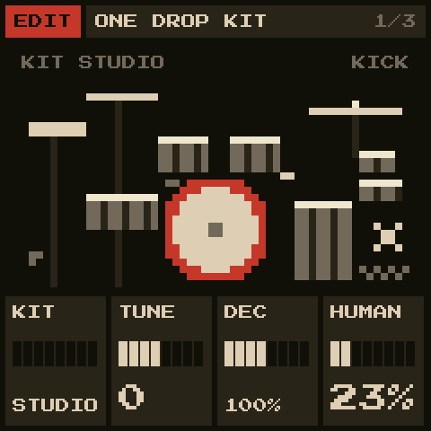
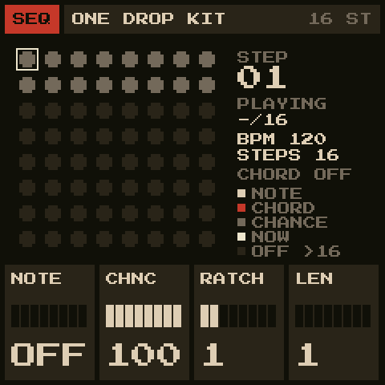

Your first guide: switch it on, play the kit, build a one drop and dub it — step by step, no rush.
Roots reggae firmware for the M-VAVE FM-1 · version 0.1 (in development: the drums are here, the band and the dub desk are next)
RIDDIM · First Guidesaulofilho.github.io/riddim-fm1 · 1/8
WHERE EVERYTHING IS
The device at a glance
The FM-1 has four knobs on the left, four on top, a grid of buttons and 27 keys. On RIDDIM they do this:
MASTER
SELECT
PRESETS
ALGORITHM
FXSELENVLFOEDITGLOHOMESAVEARPSEQPLAYRECOCT−OCT+
K1
K2
K3
K4
MASTER
the volume
SELECT
the tempo on HOME; the cursor in the sequencer
PRESETS
the next sound (on SEQ: the tempo)
ALGORITHM
picks the track, T1 to T4
KNOB 1–4
the four values at the bottom of the screen
OCT− / OCT+
octave; back / confirm in menus
the buttons
one tap opens a page, another tap the next; hold one for its combo
the 27 keys
play the track; on a DRUM track each key is a drum
RIDDIM · First Guidesaulofilho.github.io/riddim-fm1 · 2/8
POWER ON AND PLAY IN A MINUTE
First steps
Connect the FM-1 to headphones or a speaker and switch it on. A record turns on the screen, the tonearm sets down and the name echoes: that's RIDDIM.
Turn MASTER to a comfortable level and press a key: you hear the selected track.
Turn ALGORITHM to move between the four tracks, T1 to T4. HOME shows them as four speaker boxes; the cones push when a track plays.
Turn PRESETS to change the track's sound. The nine drum kits are in the DRUMS category (PRESETS 31 to 39).
Turn SELECT on HOME to set the tempo. Roots reggae sits around 72–80 BPM.
Don't worry about saving: when you stop and leave it alone for a moment, RIDDIM keeps everything.
BOOT
HOME
RIDDIM · First Guidesaulofilho.github.io/riddim-fm1 · 3/8
A ROOTS DRUM KIT ON THE KEYS
Play the kit
Turn PRESETS to ONE DROP KIT. Now each key is a drum, the same at any octave. The DRUM page (EDIT) draws the kit and lights the piece you hit.
F3 KICK
F#3 HAT
G3 CROSS
G#3 PEDAL HAT
A3 SNARE
A#3 OPEN HAT
B3 RIMSHOT
C4 TOM LO
C#4 SHAKER
D4 TOM MID
D#4 COWBELL
E4 TOM HI
F4 STEP KICK
F#4 WOOD
G4 SYNDRUM
G#4 SYN HI
A4 SYN LO
A#4 STICKS
B4 SPRING
C5 FLOOR TOM
C#5 CROSS HI
D5 TIMBALE
D#5 RIDE
E5 CRASH
F5 DUB KICK
F#5 SNARE HI
G5 SPRING HI
Try the one drop: tap HAT (F#3) on every eighth, and on beat 3 tap KICK (F3) and CROSS (G3) together. Nothing on beat 1: that's the drop.
HATKICKCROSS
Or let it play: press PLAY and the kit plays its own style by itself, a drummer behind the beat (EDIT › GROOVE: STYLE, PARTS, FILL, FEEL). EDIT › SOUND: KIT · TUNE · DECAY · HUMAN.

EDIT › SOUND · DRUM
RIDDIM · First Guidesaulofilho.github.io/riddim-fm1 · 4/8
THE SEQUENCER, THREE TRACKS
Build a one drop
A step holds one note per track, so the beat goes on three tracks, each with the ONE DROP KIT. About three minutes.
On HOME, SELECT to 76 BPM. Put the ONE DROP KIT on T1, T2 and T3 (ALGORITHM, then PRESETS).
T1, the hats. Press SEQ (the grid), then REC. Press HAT: it writes step 1 and moves to step 2. Turn SELECT one step on, press HAT again; and so on: steps 1, 3, 5 … 15.
T2, the kick. ALGORITHM to T2. On the grid with REC on, turn SELECT to step 9 and press KICK.
T3, the cross-stick. ALGORITHM to T3, SELECT to step 9, press CROSS. Press REC again to stop recording.
Press PLAY. That's the one drop. For lilt: SEQ again (PATTERN SETTINGS), turn SWING up a little on each track.
Made a mistake? Hold EDIT and press OCT− to undo.

SEQ › GRID
T1 HATT2 KICKT3 CROSS
RIDDIM · First Guidesaulofilho.github.io/riddim-fm1 · 5/8
THE ENGINEER'S MOVES
Dub it
Echo on the cross-stick. On T3, press HOME twice (MIXER 1), turn SELECT to the DELAY tile and KNOB 1 up.
Shape the echo. Press FX until DELAY: TIME on a dotted eighth, FEEDBACK past the middle, WEAR for a darker tape.
Throw. Hold FX and hold A3 (ECHO THROW): everything goes into the echo while you hold; let go and the tail rings on.
Drop the band out. Hold GLO and tap F3–B3 to mute T1–T4 (C4–F4 to solo). On HOME the muted box wears DROP.
Sweep. FX until MASTER: TYPE HP or LP, turn CUTOFF slowly. Hold FX + D4 / E4 for a quick filter down / up.
Spring reverb, throws on one track and VERSION, the dub that mixes itself, come in the next versions.
HOME › MIXER 1
FX (HOLD) › PERFORM
RIDDIM · First Guidesaulofilho.github.io/riddim-fm1 · 6/8
ONE TAP, AND HOLD
The buttons
Button
One tap
Hold
HOME
HOME, MIXER 1, MIXER 2
SYSTEM settings
EDIT
SOUND, SOURCE (FM, PHASE: more)
with OCT−/OCT+: undo / redo
SEQ
GRID, PATTERN SETTINGS
+ white key: tools; + SELECT: length
PLAY
start / stop
REC
record into the pattern
~1 s: clear the track's pattern
FX
TAPE, GRAIN, DELAY, SPACE, MASTER, DRIVE
PERFORM: throws, stutter, filter; GENERATE
SEL
SCALE, CHORD
alone: chord mode; + OCT+: LATCH
ENV / LFO
the track's envelope / LFO
ARP
the arpeggiator
alone: on / off
SAVE
SOUNDS, PROJECTS
+ C4–F4: save A–D; + F3–B3: recall
GLO
SONG
+ F3–B3: mute T1–T4; + C4–F4: solo
RIDDIM · First Guidesaulofilho.github.io/riddim-fm1 · 7/8
27 KEYS, NINE KITS
The kit, and the cheat sheet
Key
Drum
F3
KICK
F#3
HAT
G3
CROSS
G#3
PEDAL HAT
A3
SNARE
A#3
OPEN HAT
B3
RIMSHOT
C4
TOM LO
C#4
SHAKER
D4
TOM MID
D#4
COWBELL
E4
TOM HI
F4
STEP KICK
F#4
WOOD
Key
Drum
G4
SYNDRUM
G#4
SYN HI
A4
SYN LO
A#4
STICKS
B4
SPRING
C5
FLOOR TOM
C#5
CROSS HI
D5
TIMBALE
D#5
RIDE
E5
CRASH
F5
DUB KICK
F#5
SNARE HI
G5
SPRING HI
KITS: ONE DROP · ROCKERS · STEPPERS · DUB · RUB-A-DUB · ROCKSTEADY · DEEP ROOTS · TIGHT · BOOMY
It saves itself when you stop and leave it ~2.5 s. Slots A–D: hold SAVE + C4–F4 to save, + F3–B3 to recall.
More: the manual, the editor, the web emulator and the live view at saulofilho.github.io/riddim-fm1. Not yet tested on an FM-1: see the README before installing.
RIDDIM · First Guidesaulofilho.github.io/riddim-fm1 · 8/8